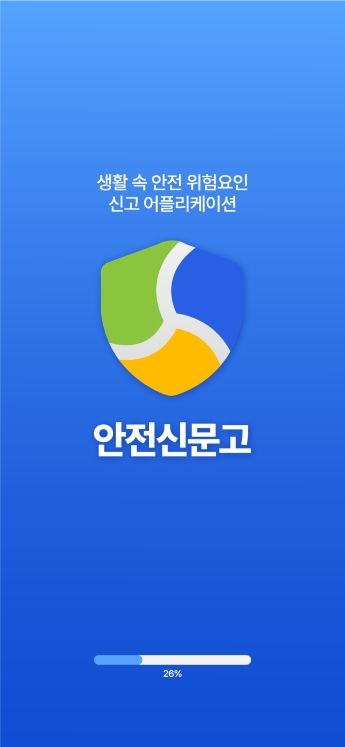
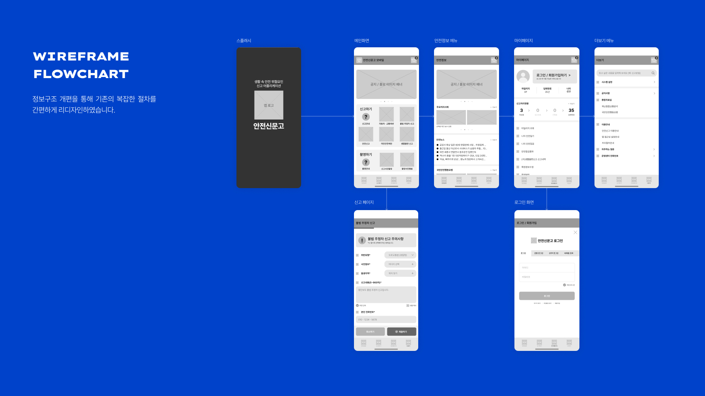
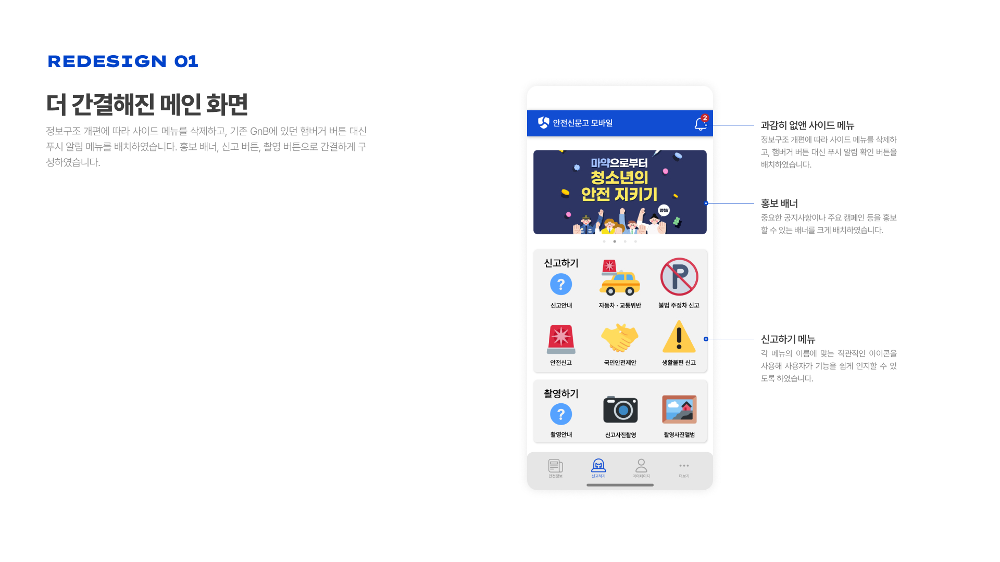
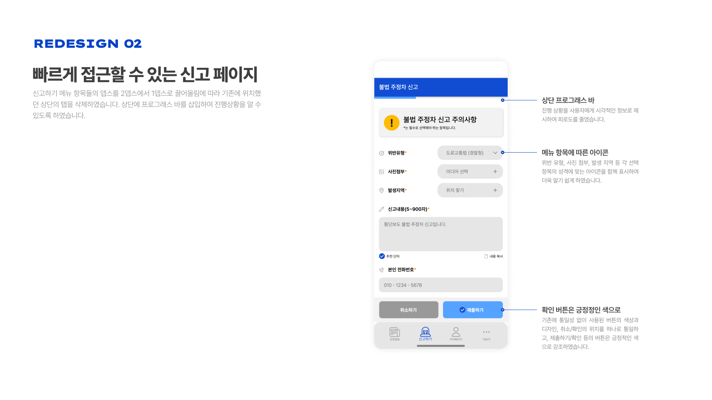
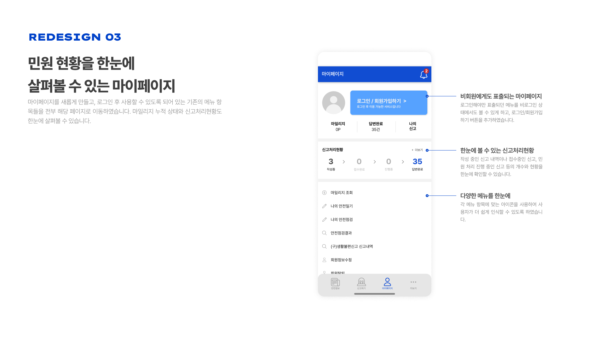
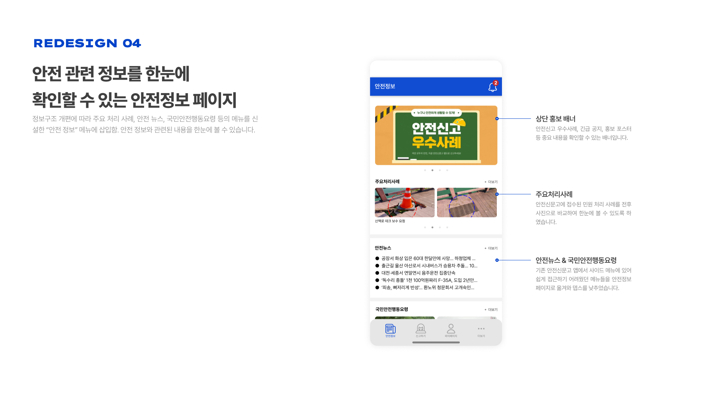

CLOSE
PREV
NEXT
안전신문고 리디자인
2023.09.08
2023.12.15
UI·UX
기존 안전신문고 어플리케이션의 문제점 '과도한 정보량'과
'중복되는 메뉴' 해소를 위한 UI/UX 리디자인 프로젝트

WIREFRAME FLOWCHART

REDESIGN
안전신문고 모바일 어플리케이션 UI/UX 리디자인 최종 결과물을 살펴볼 수 있습니다.



